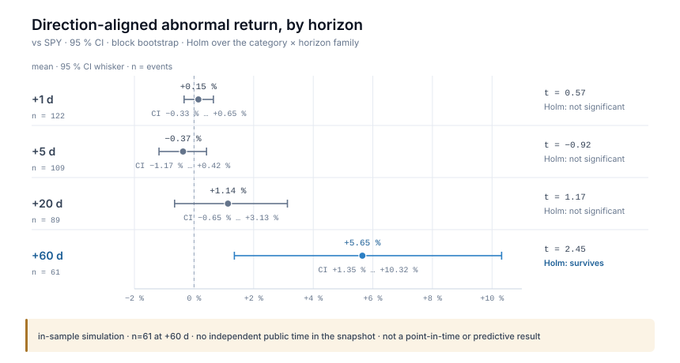

Frozen artefacts
Experiments are immutable inputs. A rerun that changes a number produces a new artefact; the old one stays and is cited by path, never edited.
experiments/reverse_rd_v1/ · experiments/reverse_rd_v2/Research
One question, one event store, and a record of what the store failed to support. Every number below is in-sample and carries its artefact path.
Can publicly observable evidence give reliable early warning of meaningful change in medical-technology development?
source: README.md; research/MISSION.md
Method
Three commitments make a number quotable, and a fourth makes it honest: the limitation it inherits.
Experiments are immutable inputs. A rerun that changes a number produces a new artefact; the old one stays and is cited by path, never edited.
experiments/reverse_rd_v1/ · experiments/reverse_rd_v2/Every model is scored against a stated base rate — for the market-to-R&D continuation target, a per-pair base rate of 0.7913 — never against an unnamed default.
docs/METHODS.md · docs/SCHEMA.mdDirection-aligned abnormal returns are bootstrapped in blocks; Holm correction runs over the full category × horizon family, so no horizon can be quoted without its correction.
medradar/stats.py · docs/METHODS.mdThe snapshot has no independent public time: published_at = available_at =
event_date on 375,378 / 375,378 rows, and timestamp_quality = 'date'.
Return studies therefore rest on a same-day-public-time assumption and are not
point-in-time results.
source: docs/DATA.md → 时间戳质量; README.md → Limitations 1–2
Result 01 · event study
Direction-aligned abnormal returns over the simulated event study, block bootstrap, Holm-corrected over the full category × horizon family.
| Horizon | n | Mean abnormal return | t | 95 % CI |
|---|---|---|---|---|
| +1 d | 122 | +0.15 % | 0.57 | [−0.33 %, +0.65 %] |
| +5 d | 109 | −0.37 % | −0.92 | [−1.17 %, +0.42 %] |
| +20 d | 89 | +1.14 % | 1.17 | [−0.65 %, +3.13 %] |
| +60 d | 61 | +5.65 % | 2.45 | [+1.35 %, +10.32 %] |
In-sample simulation, long-only, 38 simulated trades over about eleven months. No independent public time in the snapshot, so this is not a point-in-time result and not investment advice.
source: docs/metrics.json → trading.event_study; README table

source: docs/assets/figures/event-study-en.svg; docs/metrics.json → trading.event_study
Result 02 · negative results
Market-to-R&D lane, 12-month horizon. Frozen artefacts:
experiments/reverse_rd_v1/ and experiments/reverse_rd_v2/.
| Tested | Measurement | Verdict |
|---|---|---|
| Does any added source produce a detectable ranking gain? | Marginal PR-AUC on continuation: financial −0.0013, market −0.0015, publication −0.0001, all sources −0.0068 | No detectable gain |
| Does the model beat a per-pair base rate? | AP 0.7935 (model) vs 0.7913 (base rate), Δ +0.0022, 95 % CI [−0.032, +0.037] | Barely, and not beyond the interval |
| Does more data improve ordering? | ECE 0.0811 → 0.0628, FPR 0.2753 → 0.2472 | Calibration only, not ordering |
| Is the entry target stable across windows? | Differences sit inside the 0.014–0.026 window standard deviation | Unstable, so not claimed |
| Patents | USPTO Open Data Portal requires an API key | Not evaluated |
| Procurement | Snapshot is not point-in-time usable | Excluded |
source: README.md → The negative results; experiments/reverse_rd_v1/, experiments/reverse_rd_v2/; docs/REVERSE_RD.md
The E1b source-recovery experiment tested each source for a retrospective public instant. This is a shape test — 28 requests, 5 records per source — not a population estimate.
| Source | Retrospective public time | Verdict |
|---|---|---|
| SEC EDGAR | Yes — acceptanceDateTime, immutable archive,
amendments arrive as new accessions |
STRONG |
| ClinicalTrials.gov | Partial — first-post date only, date granularity,
ACTUAL records only; historical content state is not recoverable |
MEDIUM |
| openFDA 510(k) / PMA | No — no public-posting field exists;
decision_date is the event date, not the publication date |
Prospective observation only |
source: docs/refoundation/phase2/E1B_SOURCE_RECOVERY.md; README.md
Result 03 · early signal
Phase 0 is CONDITIONAL-GO: the deep-case study can continue, but only under the stated conditions (sustained positive, earlier source, human adjudication).
The gate that matters is the lead time. It did not pass, so the study is recorded as a NO-GO rather than reported as an early-warning capability.
source: research/studies/early_signal_5firms/PHASE0_REPORT.md; PROJECT_STATE.yaml → research_studies; docs/RESEARCH_INDEX.md
Limitations
These change how every number on this page may be read.
published_at = available_at = event_date for
375,378 / 375,378 rows; independent public time = 0 rows.
Unsupported until source publication timestamps are re-acquired.
35.2 % company key, 52.4 % track; unmatched events are counted, never guessed.
It records the application write path; a database owner can still replace the file.
They enter industry counts and never return studies — a deliberate loss of sample.
The calendar is rendered client-side; it
returns empty / source_changed, never a silent
ok.
38 trades; shorts are alerted but never traded; fees, squeeze-outs and delisting are unmodelled.
Difference-in-differences and synthetic control are roadmap items, not results.
Without a user-supplied CSV every China
value is null, never zero.
source: README.md → Limitations; docs/ASSUMPTIONS.md; docs/METHODS.md